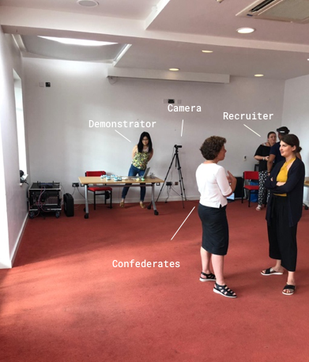

We were interested in investigating how changing the instructions users receive about the device would affect their use of the system. I provided participants with two types of instructions: what the sounds the system makes mean (Basic intelligibility) and instructions about the internal workings of the system (Enhanced intelligibility). Our research questions were as following:
For the project, we recruited 13 Blind users, and they were randomly allocated to either the Basic or Enhanced intelligibility group. We began the study with a pre-task session, which allowed the users to familiarize themselves with the system. All 13 participants received the Basic intelligibility instructions of the system, while we provided 7 participants with further Enhanced intelligibility instructions. Here are some examples of the Basic intelligibility instructions users were given were:
Whereas those in the Enhanced intelligibility group received further information about the internal workings of the system:
When the users received the instructions, they were each asked individually to take part in a semi-realistic networking task. We chose this task because this is a context a user of this technology would find the system useful and it also encouraged the participant to use the features of the system to find and identify the recruiter. We carefully designed the career networking event to mimic actual events yet make it repeatable so that every participant experiences the same conditions. This was done by recruiting confederates, a Microsoft recruiter the participants could network with and providing them with scripts and room plans.
Networking Task Setup During Main Session. Confederates talking to each other were situated in the middle of the room, with a technology demonstrator and a recruiter to the back of the room. The participant entered to the front-left, and needed to use the Hololens to locate the recruiter who is at the back-right.
Once the participant completed the study, we employed the NASA-TLX survey to measure perceived workload. As the original survey was not accessible for Blind users, we developed a 21-point-tactile, high-visibility scale supplemented with braille stickers. We then interviewed the study participants to gage their understanding of the system. We framed this by asking them to teach someone else who has a Blind how to use the system. We also included probes to follow-up on any answers that were not clear. For example: “If the headset calls out the name of a person, what can the user assume the system can see?”
These findings have three implications for designing and building computer vision systems for blind users: